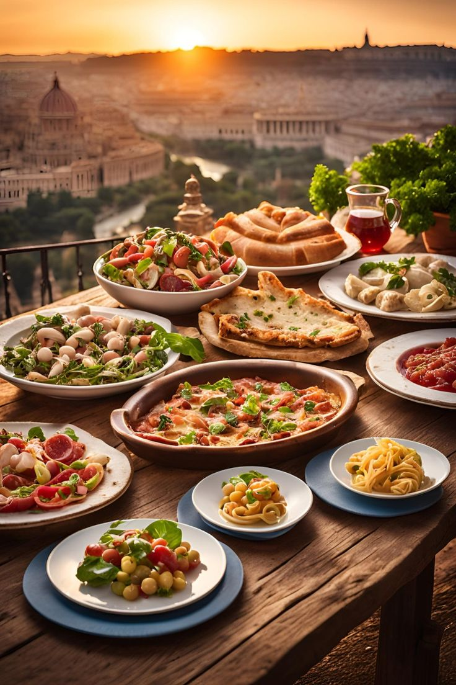

Italy
Italy is a beautiful and historically rich country located in Southern Europe,
known for its stunning landscapes,
cultural heritage,
and world-famous cuisine.


Cuisine
Italian cuisine is one of the most beloved and influential culinary traditions in the world.
It's known for its emphasis on fresh, high-quality ingredients,
simple preparation methods,
and regional diversity.
